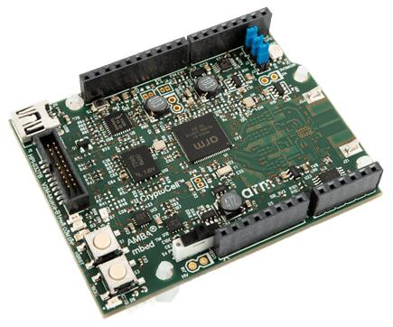

V2M Musca B1
ARM V2M Musca B1
Overview
The v2m_musca_b1 board configuration is used by Zephyr applications that run on the V2M Musca B1 board. It provides support for the Musca B1 ARM Cortex-M33 CPU and the following devices:
Nested Vectored Interrupt Controller (NVIC)
System Tick System Clock (SYSTICK)
Cortex-M System Design Kit GPIO
Cortex-M System Design Kit UART

More information about the board can be found at the V2M Musca B1 Website.
Hardware
ARM V2M MUSCA B1 provides the following hardware components:
ARM Cortex-M33
ARM IoT Subsystem for Cortex-M33
Memory
512KB on-chip system memory SRAM.
8MB of external QSPI flash.
4MB on-chip boot eFlash.
Debug
JTAG, SWD & 4 bit TRACE.
DAPLink with a virtual UART port.
Arduino interface
16 3V3 GPIO.
UART.
SPI.
I2C.
I2S.
3-channel PWM.
6-channel analog interface.
On-board Peripherals
User RGB LED.
Gyro sensor.
Combined ADC/DAC/temperature sensor.
Secure Digital I/O (SDIO) microSD card.
Supported Features
The v2m_musca_b1 board supports the hardware features listed below.
- on-chip / on-board
- Feature integrated in the SoC / present on the board.
- 2 / 2
-
Number of instances that are enabled / disabled.
Click on the label to see the first instance of this feature in the board/SoC DTS files. -
vnd,foo -
Compatible string for the Devicetree binding matching the feature.
Click on the link to view the binding documentation.
v2m_musca_b1/musca_b1 target
Type |
Location |
Description |
Compatible |
|---|---|---|---|
CPU |
on-board |
ARM Cortex-M33 CPU1 |
|
ARM architecture |
on-board |
ARM Serial Configuration Control (SCC)1 |
|
Clock control |
on-board |
Generic fixed-rate clock provider1 |
|
Counter |
on-board |
ARM CMSDK timer1 |
|
GPIO & Headers |
on-board |
ARM CMSDK GPIO1 |
|
Interrupt controller |
on-chip |
ARMv8-M NVIC (Nested Vectored Interrupt Controller)1 |
|
LED |
on-board |
Group of GPIO-controlled LEDs1 |
|
Mailbox Handling Unit |
on-board |
ARM MHU (Message Handling Unit)2 |
|
MMU / MPU |
on-board |
ARMv8-M MPU (Memory Protection Unit)1 |
|
Serial controller |
on-board |
ARM PL011 UART2 |
|
SRAM |
on-board |
Generic on-chip SRAM1 |
|
Timer |
on-chip |
ARMv8-M System Tick1 |
v2m_musca_b1/musca_b1/ns target
Type |
Location |
Description |
Compatible |
|---|---|---|---|
CPU |
on-board |
ARM Cortex-M33 CPU1 |
|
Clock control |
on-board |
Generic fixed-rate clock provider1 |
|
Counter |
on-board |
ARM CMSDK timer1 |
|
GPIO & Headers |
on-board |
ARM CMSDK GPIO1 |
|
Interrupt controller |
on-chip |
ARMv8-M NVIC (Nested Vectored Interrupt Controller)1 |
|
Mailbox Handling Unit |
on-board |
ARM MHU (Message Handling Unit)2 |
|
MMU / MPU |
on-board |
ARMv8-M MPU (Memory Protection Unit)1 |
|
MTD |
on-board |
Flash node1 |
|
on-board |
Fixed partitions of a flash (or other non-volatile storage) memory1 |
||
Serial controller |
on-board |
ARM PL011 UART2 |
|
SRAM |
on-board |
Generic on-chip SRAM1 |
|
Timer |
on-chip |
ARMv8-M System Tick1 |
Interrupt Controller
Musca B1 is a Cortex-M33 based SoC and has 15 fixed exceptions and 77 IRQs.
A Cortex-M33-based board uses vectored exceptions. This means each exception calls a handler directly from the vector table.
Zephyr provides handlers for exceptions 1-7, 11, 12, 14, and 15, as listed in the following table:
Exc# |
Name |
Remarks |
Used by Zephyr Kernel |
|---|---|---|---|
1 |
Reset |
system initialization |
|
2 |
NMI |
system fatal error |
|
3 |
Hard fault |
system fatal error |
|
4 |
MemManage |
MPU fault |
system fatal error |
5 |
Bus |
system fatal error |
|
6 |
Usage fault |
Undefined instruction, or switch attempt to ARM mode |
system fatal error |
7 |
SecureFault |
Unauthorized access to secure region from ns space |
system fatal error |
8 |
Reserved |
not handled |
|
9 |
Reserved |
not handled |
|
10 |
Reserved |
not handled |
|
11 |
SVC |
system calls, kernel run-time exceptions, and IRQ offloading |
|
12 |
Debug monitor |
system fatal error |
|
13 |
Reserved |
not handled |
|
14 |
PendSV |
context switch |
|
15 |
SYSTICK |
system clock |
|
16 |
Reserved |
not handled |
|
17 |
Reserved |
not handled |
|
18 |
Reserved |
not handled |
Pin Mapping
The ARM V2M Musca B1 Board has 4 GPIO controllers. These controllers are responsible for pin-muxing, input/output, pull-up, etc.
All GPIO controller pins are exposed via the following sequence of pin numbers:
Pins 0 - 15 are for GPIO
Mapping from the ARM V2M Musca B1 Board pins to GPIO controllers:
D0 : P0_0
D1 : P0_1
D2 : P0_2
D3 : P0_3
D4 : P0_4
D5 : P0_5
D6 : P0_6
D7 : P0_7
D8 : P0_8
D9 : P0_9
D10 : P0_10
D11 : P0_11
D12 : P0_12
D13 : P0_13
D14 : P0_14
D15 : P0_15
Peripheral Mapping:
UART_0_RX : D0
UART_0_TX : D1
SPI_0_CS : D10
SPI_0_MOSI : D11
SPI_0_MISO : D12
SPI_0_SCLK : D13
I2C_0_SDA : D14
I2C_0_SCL : D15
For more details please refer to Musca B1 Technical Reference Manual (TRM).
RGB LED
Musca B1 has a built-in RGB LED connected to GPIO[4:2] pins.
Red LED connected at GPIO[2] pin,with optional PWM0.
Green LED connected at GPIO[3] pin,with optional PWM1.
Blue LED connected at GPIO[4] pin,with optional PWM2.
Note
The SCC registers select the functions of pins GPIO[4:2].
System Clock
V2M Musca B1 has a 32.768kHz crystal clock. The clock goes to a PLL and is multiplied to drive the Cortex-M33 processors and SSE-200 subsystem. The default is 40MHz but can be increased to 160MHz maximum for the secondary processor (CPU1) via software configuration. The maximum clock frequency for the primary processor (CPU0) is 40MHz.
Serial Port
The ARM Musca B1 processor has two UARTs. Both the UARTs have only two wires for RX/TX and no flow control (CTS/RTS) or FIFO. The Zephyr console output, by default, uses UART1.
Security components
Implementation Defined Attribution Unit (IDAU). The IDAU is used to define secure and non-secure memory maps. By default, all of the memory space is defined to be secure accessible only.
Secure and Non-secure peripherals via the Peripheral Protection Controller (PPC). Peripherals can be assigned as secure or non-secure accessible.
Secure boot.
Secure AMBA® interconnect.
Serial Configuration Controller (SCC)
The ARM Musca B1 test chip implements a Serial Configuration Control (SCC) register. The purpose of this register is to allow individual control of clocks, reset-signals and interrupts to peripherals, and pin-muxing.
Boot memory
Normal Musca-B1 test chip boot operation is from 4MB eFlash by default, and it offers the fastest boot method. Musca-B1 test chip also support to boot from 8MB QSPI. You can update the DAPLink firmware for either QSPI or eFlash for booting.
Programming and Debugging
Musca B1 supports the v8m security extension, and by default boots to the secure state.
When building a secure/non-secure application, the secure application will have to set the idau/sau and mpc configuration to permit access from the non-secure application before jumping.
The following system components are required to be properly configured during the secure firmware:
AHB5 TrustZone Memory Protection Controller (MPC).
AHB5 TrustZone Peripheral Protection Controller (PPC).
Implementation-Defined Attribution Unit (IDAU).
For more details please refer to Corelink SSE-200 Subsystem.
Flashing
DAPLink
V2M Musca B1 provides:
A USB connection to the host computer, which exposes a Mass Storage and an USB Serial Port.
A Serial Flash device, which implements the USB flash disk file storage.
A physical UART connection which is relayed over interface USB Serial port.
This interfaces are exposed via DAPLink which provides:
Serial Wire Debug (SWD).
USB Mass Storage Device (USBMSD).
UART.
Remote reset.
For more details please refer to the DAPLink Website.
Building a secure only application
You can build applications in the usual way. Here is an example for the Hello World application.
# From the root of the zephyr repository
west build -b v2m_musca_b1 samples/hello_world
Open a serial terminal (minicom, putty, etc.) with the following settings:
Speed: 115200
Data: 8 bits
Parity: None
Stop bits: 1
Reset the board, and you should see the following message on the corresponding serial port:
Hello World! musca_b1
Building a secure/non-secure with Trusted Firmware
The process requires five steps:
Build Trusted Firmware (tfm).
Import it as a library to the Zephyr source folder.
Build Zephyr with a non-secure configuration.
Merge the two binaries together and sign them.
Concatenate the bootloader with the signed image blob.
In order to build tfm please refer to Trusted Firmware M Guide.
Follow the build steps for AN521 target while replacing the platform with
-DTARGET_PLATFORM=MUSCA_B1 and compiler (if required) with -DCOMPILER=GNUARM
Copy over tfm as a library to the Zephyr project source and create a shortcut for the secure veneers and necessary header files. All files are in the install folder after TF-M built.
Uploading an application to V2M Musca B1
Applications must be converted to Intel’s hex format before being flashed to a V2M Musca B1. An optional bootloader can be prepended to the image. The QSPI flash base address alias is 0x0, and the eFlash base address alias is 0xA000000. The image offset is calculated by adding the flash offset to the bootloader partition size.
A third-party tool (srecord) is used to generate the Intel formatted hex image. For more information refer to the Srecord Manual.
srec_cat $BIN_BOOTLOADER -Binary -offset $FLASH_OFFSET $BIN_SNS -Binary -offset $IMAGE_OFFSET -o $HEX_FLASHABLE -Intel
# For a 128K bootloader IMAGE_OFFSET = $FLASH_OFFSET + 0x20000
srec_cat $BIN_BOOTLOADER -Binary -offset 0xA000000 $BIN_SNS -Binary -offset 0xA020000 -o $HEX_FLASHABLE -Intel
Connect the V2M Musca B1 to your host computer using the USB port. You should
see a USB connection exposing a Mass Storage (MUSCA_B) and a USB Serial Port.
Copy the generated zephyr.hex in the MUSCA_B drive.
Reset the board, and you should see the following message on the corresponding serial port:
Hello World! musca_b1